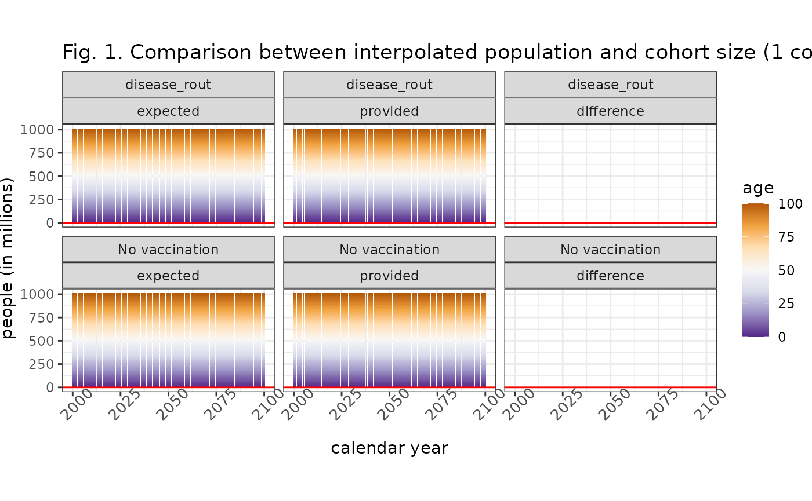
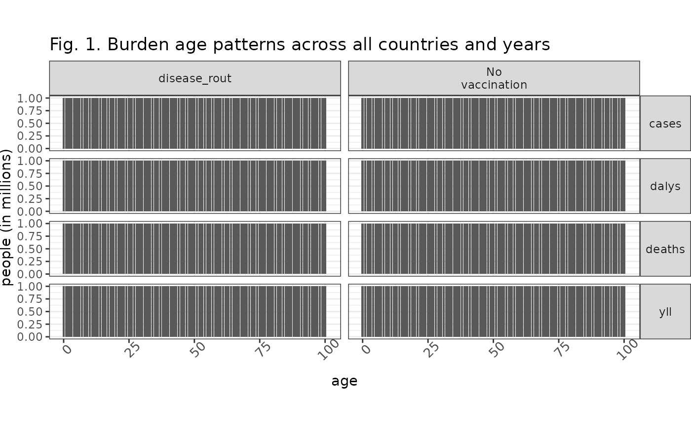
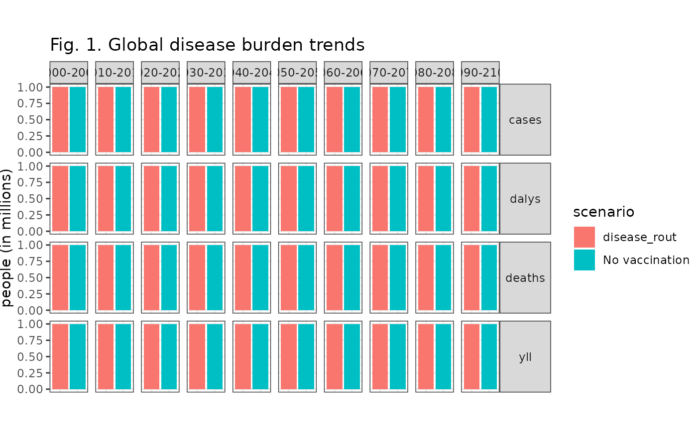
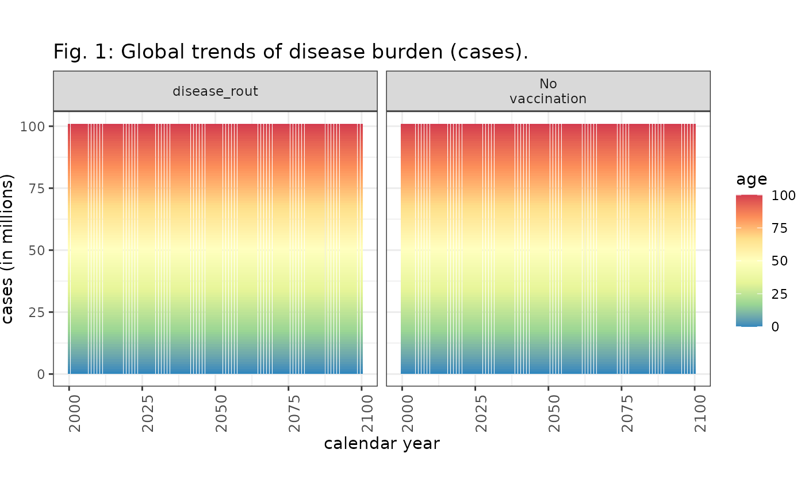
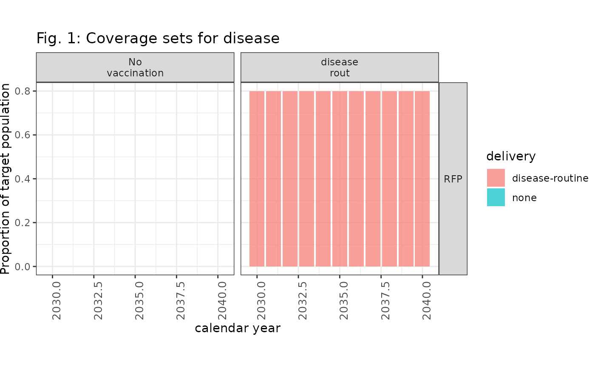
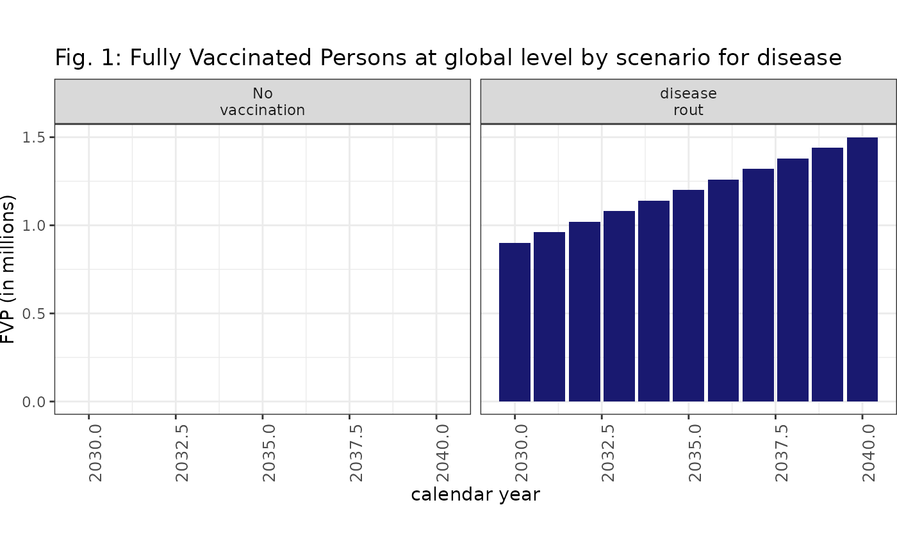

Using plotting and preparation functions
Source:vignettes/plotting_and_plotting_prep.Rmd
plotting_and_plotting_prep.RmdThis vignette shows how to use the plotting-preparation and plotting functions in vimcheck.
Note that all data used here are placeholders.
Compare demography
Users can check demographic alignment of burden data using
check_demography_alignment(), then prepare it for plotting
using prep_plot_demography(), and plot it using
plot_compare_demography().
burden <- eg_burden_template
burden <- check_demography_alignment(burden, eg_wpp)
burden <- prep_plot_demography(burden)
plot_compare_demography(burden, 1)
Examine age patterns
Users can check age patterns in burden data using
prep_plot_age() and plotting using
plot_age_patterns().
Note that values are placeholders and you should expect to see real age-wise burden patterns look very different.
burden <- eg_burden_template
burden <- prep_plot_age(burden)
# manually set values as template default is NA, prevents ggplot warnings
burden$value_millions <- 1.0
plot_age_patterns(burden, 1)
Global burden by decade
Users can check the global burden in each decade for each scenario
using prep_plot_burden_decades() and
plot_global_burden_decades().
burden <- eg_burden_template
year_max <- 2100
burden <- prep_plot_burden_decades(burden, year_max)
# manually set values as template default is NA, prevents ggplot warnings
burden$value_millions <- 1.0
plot_global_burden_decades(burden, 1)
Global burden timeseries
Users can check a timeseries of global burdens by scenario and age
group. In contrast with the plotting scheme above,
prep_plot_global_burden() converts the burden data to
long-format and transforms the data tibble into a nested-tibble.
This gives a tibble with as many rows as burden outcomes: cases, deaths,
DALYs and YLLs, and a tibble giving the annual values by age for each
burden outcome.
The function plot_global_burden() is intended to be
applied row-wise, taking the burden outcome name (e.g. “cases”) and the
burden outcome data to plot a timeseries with values by age.
burden <- eg_burden_template
burden <- prep_plot_global_burden(burden)
# NOTE: expected use case is to loop over nested column DFs
# set values to a dummy placeholder
burden$burden_data[[1]]$value_millions <- 1
plot_global_burden(
burden$burden_data[[1]],
burden$burden_outcome[[1]],
1
)
Coverage sets
Users can check trends in coverage sets using
prep_plot_coverage_set() to prepare coverage sets data, and
plot_coverage_set() to prepare a plot facetted by country
and scenario.
# load some example data
coverage <- eg_coverage
coverage <- prep_plot_coverage_set(coverage)
plot_coverage_set(coverage, 1)
Fully-vaccinated persons
Users can check trends in fully-vaccinated persons (FVPs) over time
using prep_plot_fvp() to prepare FVPs sets data, and
plot_fvps() to prepare a plot facetted by country and
scenario.
# load some example data
fvps <- eg_fvps
fvps <- prep_plot_fvp(fvps, 2030, 2040) # example data has year limits 2030-40
plot_fvp(fvps, 1)